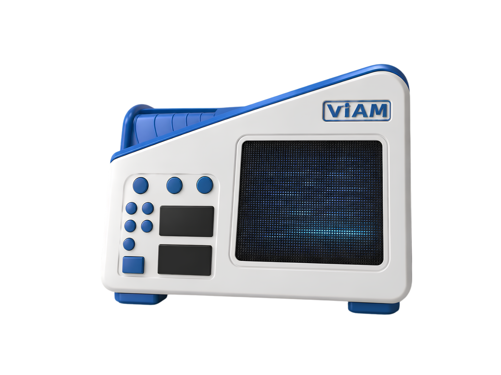
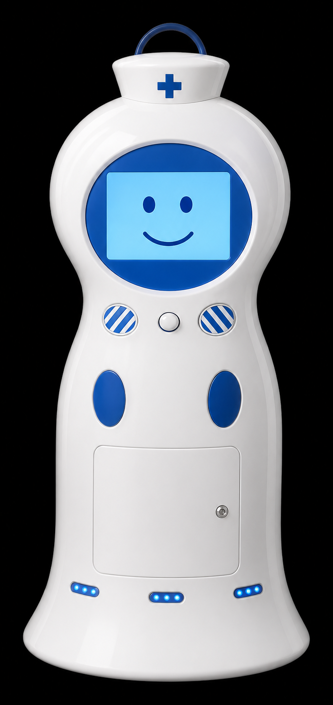

Los proyectos
Tres dispositivos, una misión
Hacer el diagnóstico y la atención más accesibles, abiertos y con menos saturación.
ViamPulse
El corazón, con claridad digital.
Un estetoscopio digital que captura el sonido cardíaco, lo amplifica y filtra el ruido del entorno. Un modelo de IA hecho y entrenado por nosotros, con 4 anomalías cardíacas identificadas, analiza la señal en tiempo real y resalta patrones que podrían pasar desapercibidos al oído.

ViamVision
Ecografía guiada por inteligencia artificial.
Un ecógrafo que convierte los ecos de ultrasonido en imagen y usa IA para guiar el posicionamiento de la sonda y resaltar estructuras anatómicas, haciendo el estudio más sencillo de realizar e interpretar.

ICARO
Robot asistente inteligente, sin depender de internet.
Un robot con IA que apoya al personal de salud en la sala de espera: registra datos del paciente, toma la temperatura sin contacto y puede ayudar a trasladarlo, para que la atención avance con menos saturación.

El proceso
Bitácora del camino
ViamPulse, ViamVision e ICARO — del primer boceto al prototipo final.